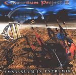

| Artist: | Consortium Project |
| Title: | Continuum In Extremis |
| Label: | Locomotive M70622 |
| Length(s): | 58 minutes |
| Year(s) of release: | 2001 |
| Month of review: | [02/2002] |
| 1) | Continuum In Extremis | 5.34 |
| 2) | Asylum Seekers | 5.10 |
| 3) | The Catalyst | 4.02 |
| 4) | Intrusions Of Madness | 5.08 |
| 5) | A Momentary "Lapse Of Reason" | 5.32 |
| 6) | Mirror Image | 5.01 |
| 7) | Sentiment In Sanctuary | 6.43 |
| 8) | What You Sow, You Reap | 4.36 |
| 9) | Asphyxia | 6.00 |
| 10) | Collide-o-scope (when Past And Present Collide) | 6.48 |
| 11) | Poetic Justice | 3.57 |
Asylum Seekers opens with spoken Dutch and English vocals. The music opens pacily, but slows down later. In The Catalyst keyboards and varied signatures make for a heavy kind of Bon Jovi (?), the melodic lines are again good.
Intrusions Of Madness might not be that original, but it is a well crafted track with good vocal melodies including a fine chorus in AOR style. On the whole the song is less heavy and excludes extensive soloing.
Magnum, but heavier, I hear on A Momentary "Lapse of reason" (sic). It all sounds rather straightforward, but the middle part of the track is more atmospheric with flute like keyboards and long chords on guitar. Then the drums set back in and the guitar starts to solo. Quite a bit of soloing here. At the end the vocals returns ending the song in sparse vocal eruptions.
Mirror Image is quite bit heavier and brings us back to Threshold with bombastic keys in the back. In fact, Threshold is the key reference here. This is a good one with some memorable melodies.
Sentiment In Sanctuary is a rather typical piano riddled progmetal ballad. The vocals sound a bit overdramatic with synth strings and backing choirs. After a few minutes the song takes on a plodding character. A strong song which takes its listener on a journey, including an epic guitar solo at the end. Very good, although I could have done without the backing choirs at the end. They introduce a slickness that was best avoided.
What You Sow, You Reap is a comparitively simply rock track with plenty of organ to fill up the holes in the sound spectrum. An energetic track, but one which brings us too little in rewards. The chorus is a bit irritating.
After a bit of German we are in Asphyxia. After a sinister opening it rocks away . The same is done on the next one, Collide-O-Scope, but now French is used as the introducing language. This track is one of the varied ones and spun out. Mind the staccato rhythm guitars.
More of the same we find on the closer Poetic Justice.